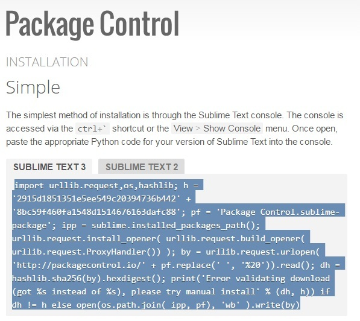
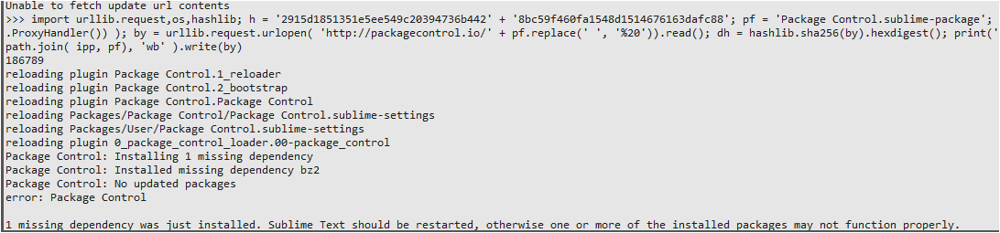

- 下載subline text3，記得下載x86的可攜式版本
- 下載nodejs，並安裝
- 到google搜尋package control installation

- 在subline text3按ctrl+`把上個步驟的package control東西貼到下面，執行。

- 在subline text3按ctrl+shift+p(搜尋)，輸入pci
- 在pci模式下，安裝html css.js 、Emmet、autoFileName
- 在subline text3按preferences->package settings->html….->set node path，設定node path正確的路徑。